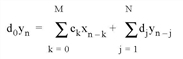
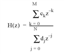
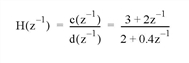

The IR_FILTER function filters data with an infinite impulse response (IIR) or finite impulse response (FIR) filter.
This routine is written in the IDL language. Its source code can be found in the file ir_filter.pro in the lib subdirectory of the IDL distribution.
The form of the filter is given by the following equation:

If the input vector D contains only one element, d 0 , the second term of the equation drops out, and the filter is nonrecursive or finite impulse response (FIR). If D contains more than one element, the filter is recursive or infinite impulse response (IIR).
If d 0 is not equal to 1, the routine normalizes the filter coefficients by d 0 .
This filter, H(z), would be described in the z -domain by the following equation:

Result = IR_FILTER( C [, D ], Data [, / DOUBLE ])
The Result is a vector containing the filtered data.
A vector defining the numerator (feedforward) filter coefficients.
An optional vector where the first element of D is the scaling factor and the rest of the elements, if any, are the denominator (feedback) filter coefficients. If not supplied, the default is [1].
The input data vector to be filtered.
If set, this function returns the filtered data in double precision. The default is to return the data in the precision with which it was entered.
Consider the following transfer function:

The coefficients of the numerator, ordered in ascending powers of z -1 , are
c=[3, 2]
The coefficients of the denominator, with a d 0 scaling factor of 2, are
d=[2, 0.4]
The call to the filter function on a data vector data is
filtered_data = IR_FILTER( c, d, data )
|
6.3 |
Introduced |